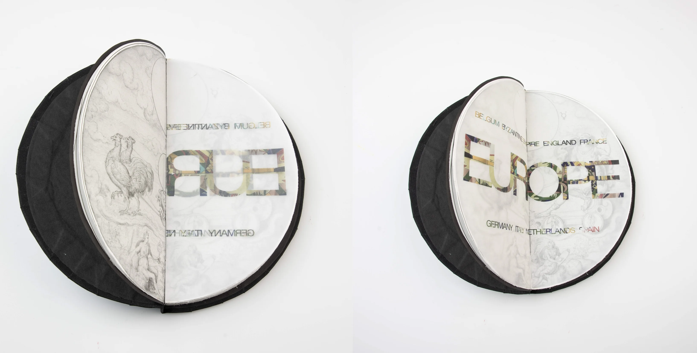

CIRCLE AS A SACRED SYMBOL
This project was created on the basis of the Rijksmuseum archive, from which round objects were selected, or rather objects that were photographed from a perspective where the cut looks like a circle.
The circle has long been a symbol of wholeness, unity, eternity, and the divine in various cultures and religious practices. In this project, you could explore circles as representations of: - Spiritual wholeness or unity (halos, mandalas, or sacred geometry), - Ritualistic purposes (ritual objects, ceremonial spaces, or circular motifs in religious art), - Eternal cycles ( depictions of the cosmos, life and death, or time in circular forms).


